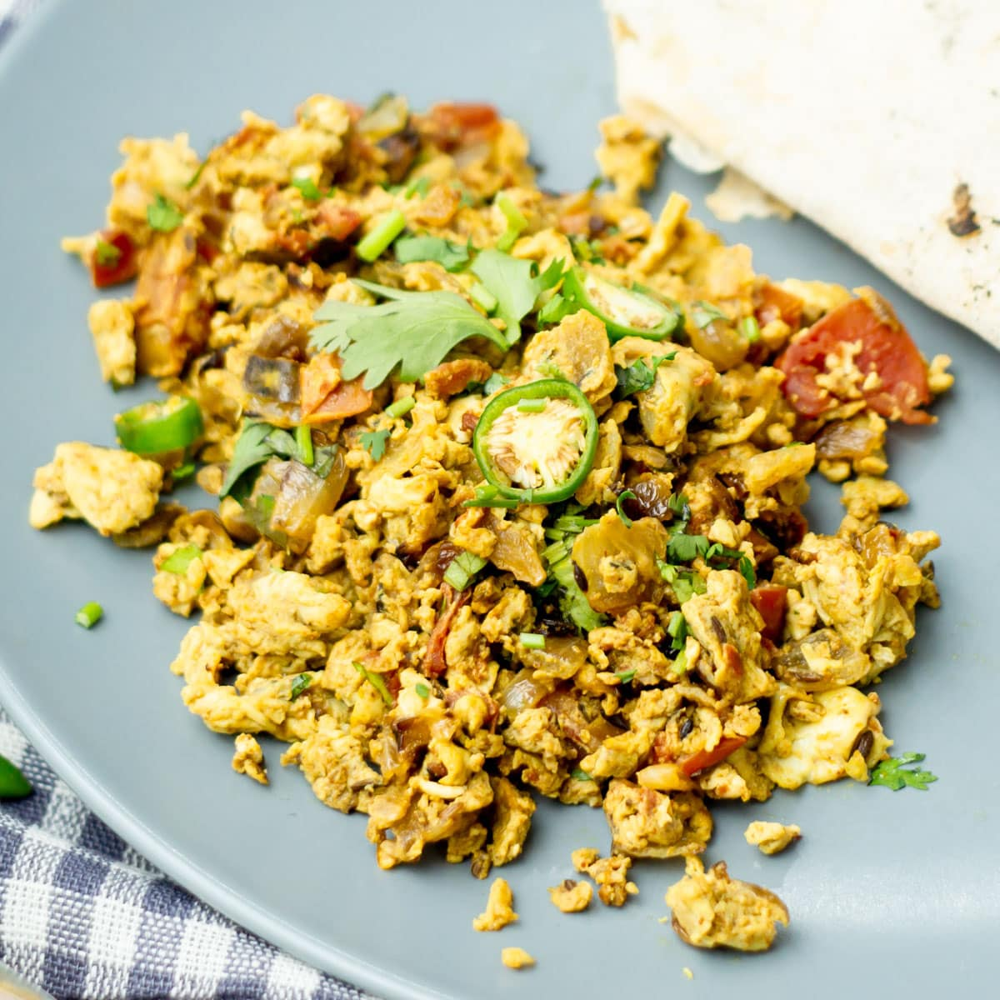

Egg Saak
30 mins
Indian
A flavorful Indian egg dish, perfect for a quick and satisfying meal.
Serves 2-3 people
Ingredients
- 1/2 onion, diced
- 1 tomato, diced
- 4 eggs
- Grated ginger
- Milk
- Red chili powder
- Turmeric powder
- Cumin powder
- Coriander powder
- Saak masala
- Oil
- Salt to taste
Instructions
- In a pan, add one scoop and half oil
- Dice half an onion and add it into the oil
- Finely dice one tomato and it into the oil with some grated ginger
- In a separate bowl, add a little bit of milk
- Add some salt, red chili, turmeric powder, cumin powder, coriander powder, saak masala and mix well
- Crack 4 eggs and mix vigorously
- Once the tomatoes and onions are well cooked, add the eggs into the pan
- Add some coriander and saak masala if needed